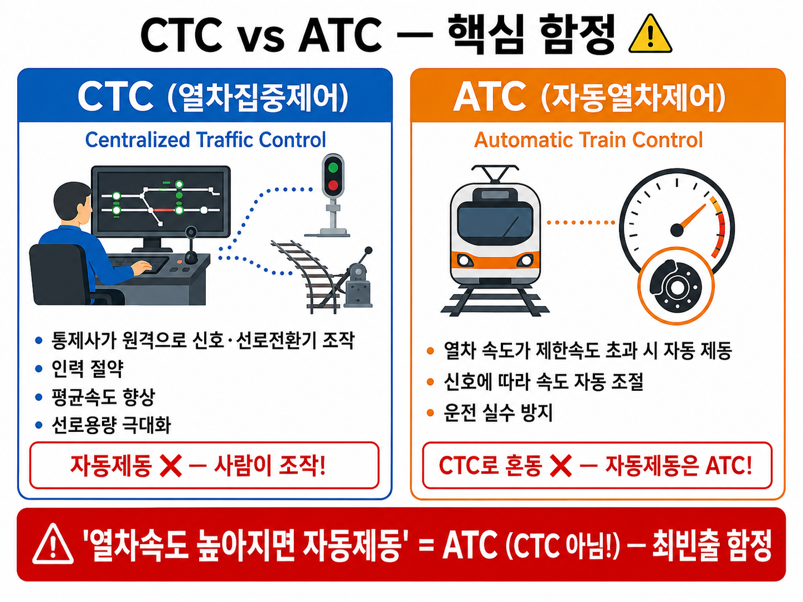
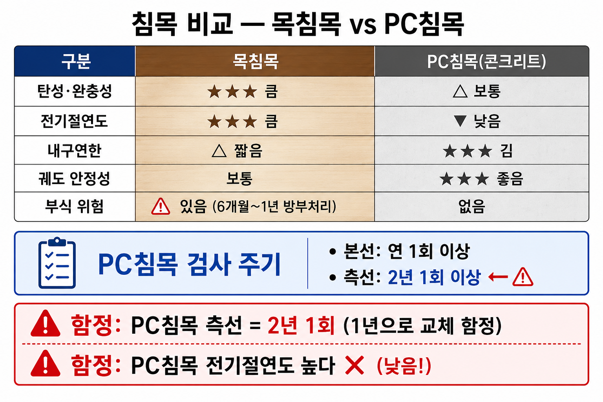
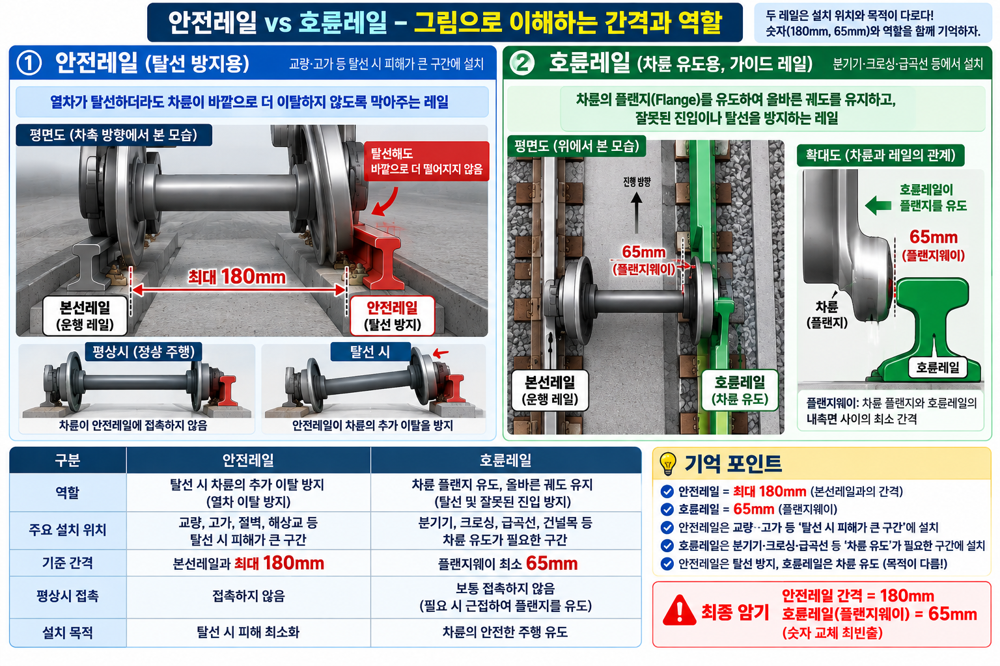
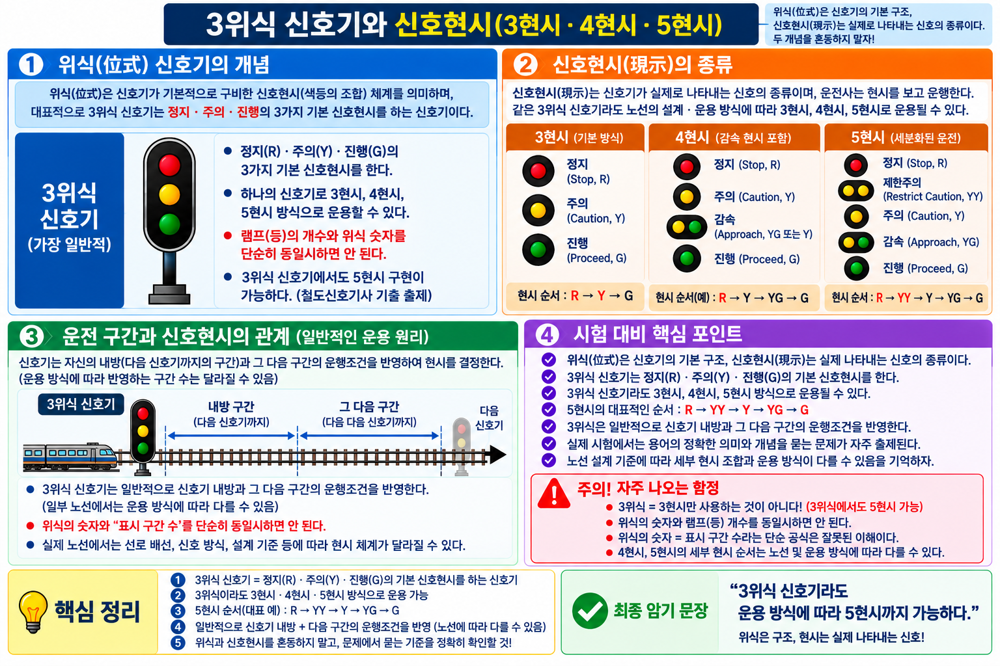

PART 1. 총론 — 철도 개념·분류·역사▲
개념 01철도 특징 비해당
| 철도 특징 O | 철도 특징 X |
|---|---|
| 신속성·신뢰성·안정성·친환경성·경제성 에너지효율성·대량수송성·장거리성·편리성 | 기동성 ❌ (자동차 특징) |
⚠️ 함정 주의: 기동성 = 자동차 특징 ← 철도 특징으로 교체 함정
이론 배경: 철도는 정해진 레일 위만 운행하므로 원하는 곳으로 자유롭게 이동하는 기동성이 없습니다. 이것이 자동차와의 핵심 차이점이며, 시험에서 가장 자주 나오는 함정입니다.
📝 기출 예시
Q. 철도의 특징으로 옳지 않은 것은?
정답: 기동성 (자동차의 특징)
오답함정: "에너지효율성이 없다"는 오답
개념 02철도 법제상 분류 비해당
국유철도 / 지방철도 / 경편철도 / 전용철도
⚠️ 함정 주의: 공영철도 → 법제상 분류 아님
이론 배경: 철도사업법상 분류는 소유·운영 주체에 따라 국유·지방·경편·전용 4종으로 나뉩니다. 공영철도는 일반적 표현이지 법제상 공식 분류 명칭이 아닙니다.
📝 기출 예시
Q. 철도 법제상 분류에 해당하지 않는 것은?
정답: 공영철도
오답함정: "전용철도가 법제상 분류에 없다"는 오답
개념 03수송수요 예측방법 4종 + 비해당
| 방법 | 설명 |
|---|---|
| 시계열분석법 | 시간적 경과에 따른 과거 변동 통계 |
| 요인분석법 | 요인변수와 수요 관계 분석 |
| OD표 작성법 | 출발지-도착지 교통량 행렬 |
| 중력모델법 | 교통량 ∝ 수요량 / 거리에 반비례 |
⚠️ 함정 주의: 선로이용률 → 예측방법 아님 (선로용량 산정 지표)
⚠️ 함정 주의: 중력모델 거리: 반비례 ← 비례로 교체 함정
이론 배경: 수송수요 예측방법 4종 중 중력모델법은 물리학의 만유인력을 교통에 적용한 것입니다. 거리가 멀수록 수요가 감소(반비례)합니다. "비례"로 바꾸는 함정에 주의합니다.
📝 기출 예시
Q. 출발지-도착지 교통량을 행렬 형태로 나타내는 예측방법은?
정답: OD표 작성법
오답함정: "선로이용률"을 예측방법으로 포함하는 오답
개념 04철도 역사 연도
| 사건 | 연도 | 함정 |
|---|---|---|
| 세계 최초 여객철도 (영국 리버풀~맨체스터) | 1830년 | 1835년 교체 |
| 우리나라 최초 철도 (경인선) | 1899년 | 1898·1900 교체 |
| 경부선 전구간 개통 | 1905년 | 1903·1907 교체 |
이론 배경: 세계 최초 여객철도(1830년 영국 리버풀~맨체스터선)와 우리나라 최초 철도(1899년 경인선)의 연도를 정확히 암기해야 합니다. 연도 숫자를 교체하는 함정이 자주 출제됩니다.
📝 기출 예시
Q. 우리나라 최초 철도인 경인선이 개통된 연도는?
정답: 1899년
오답함정: "1898년" 또는 "1900년"으로 혼동하는 오답
개념 05수송 서비스 개량 vs 수송력 증강
| 구분 | 예시 | 비해당 |
|---|---|---|
| 수송 서비스 개량 | 역 냉난방화, 에스컬레이터, 장애자시설 확충 | |
| 수송력 증강 | 복선화, 전철화, 차량 증차 | 철도관련법령 정비 ❌ |
이론 배경: 수송 서비스 개량은 기존 시설의 편의성을 높이는 것(에스컬레이터 등), 수송력 증강은 운반 능력 자체를 늘리는 것(복선화 등)입니다. 법령 정비는 어느 쪽에도 해당하지 않습니다.
📝 기출 예시
Q. 수송력 증강 방법에 해당하지 않는 것은?
정답: 철도관련법령 정비
오답함정: "에스컬레이터 설치"를 수송력 증강으로 답하는 오답
PART 2. 차량▲
개념 06철도 종류 분류

철도 종류 분류 구조도
| 종류 | 구동방식 | 구배한도/특징 |
|---|---|---|
| 점착(마찰)철도 | 차륜-레일 마찰력 | 마찰계수 0.10~0.25 / 구배한도 20~50% |
| 치궤조(치차)철도 | Rack레일+치차 | 급구배 운전 가능 |
| 강색철도 | 강선(와이어) 견인 | 평균구배 100~200% |
| 모노레일 | 고무타이어 | 급구배·급곡선 용이 |
이론 배경: 점착철도는 차륜-레일 마찰력으로 구동하는 일반 철도입니다. 치궤조(치차)철도는 산악 급구배 구간에서 Rack 레일과 치차(톱니바퀴)의 맞물림으로 등반합니다.
📝 기출 예시
Q. 급구배 구간 운전에 사용하는 구동 방식은?
정답: 치궤조(치차)철도 — Rack 레일+치차
오답함정: "점착철도가 급구배에 적합하다"는 오답
개념 07전기방식 비교
| 방식 | 대표 | 특징 |
|---|---|---|
| 교류 25,000V | 국철 전기철도 | 점착성능 우수, 소형이어도 대량 견인 |
| 직류 1,500V | 구형 도시철도 | 터널 단면 작음, 통신유도장애 적음 |
⚠️ 함정 주의: 직류 25,000V → 없음. 교류 25,000V가 국철 표준
이론 배경: 교류 25,000V는 변압기로 전압 변환이 쉬워 변전소 간격을 넓힐 수 있습니다. 직류 25,000V는 존재하지 않습니다. 교류=25,000V, 직류=1,500V로 구분해서 외웁니다.
📝 기출 예시
Q. 국철 전기철도의 표준 전기방식은?
정답: 교류 25,000V
오답함정: "직류 25,000V"라고 답하는 오답
개념 08집전장치 비해당
집전장치 O: 팬터그래프 / 트롤리 폴 / 뷰겔 / 집전슈

집전장치 종류 비교
⚠️ 함정 주의: 축전지 → 집전장치 아님 (전력 저장장치)
이론 배경: 집전장치는 전차선으로부터 전력을 받아 차량에 공급하는 장치입니다. 축전지는 전력을 저장하는 장치로, 집전이 아닌 저장 기능이므로 집전장치가 아닙니다.
📝 기출 예시
Q. 집전장치의 종류가 아닌 것은?
정답: 축전지 (전력 저장장치)
오답함정: "팬터그래프가 집전장치가 아니다"라는 오답
개념 09제동·공전 핵심
| 항목 | 내용 | 함정 |
|---|---|---|
| 철도 제동방식 | 공기제동 | 유압 아닌 공기압 |
| 점착력과 제동력 | 점착력 ≥ 제동력 | >, ≤, < 교체 |
| 공전 방지 | 레일 모래 / 기관차 정비 / 선로보수 | 출발 급가속 = 공전 유발 ❌ |
⚠️ 함정 주의: 출발 시 급가속 → 인장력 최대화 ❌ → 공전 유발 (방지법 아님)
이론 배경: 철도 제동은 공기압(압축공기)을 이용합니다. 점착력이 제동력보다 크거나 같아야 차바퀴가 미끄러지지 않고 제동됩니다. 출발 시 급가속은 공전을 방지하는 것이 아니라 유발합니다.
📝 기출 예시
Q. 공전 방지 방법으로 적절하지 않은 것은?
정답: 출발 시 급가속 (공전 유발)
오답함정: "레일에 모래를 뿌린다"를 오답으로 착각하는 경우
개념 10모노레일 특징·문제점
| 특징(장점) | 문제점 |
|---|---|
| 소음·진동·대기오염 거의 없음 | 분기장치 복잡, 작동시간 김 |
| 고무타이어 → 급구배·급곡선 용이 | 타 교통기관과 승환 어려움 |
| 지하철 대비 건설비 싸고 공기 짧음 | 차량고장 시 피난 시간 오래 걸림 |
⚠️ 함정 주의: '소음·진동·대기오염 많다' → 틀림. 거의 없음
이론 배경: 모노레일은 고무타이어로 주행하여 소음·진동·대기오염이 거의 없습니다. 단, 분기장치가 복잡하고 고장 시 승객 피난에 시간이 걸리는 단점이 있습니다.
📝 기출 예시
Q. 모노레일의 특징으로 옳지 않은 것은?
정답: 소음·진동·대기오염이 많다 (실제로는 거의 없음)
오답함정: "급곡선 통과가 어렵다"는 오답 (실제로 용이함)
PART 3. 선로▲
개념 11선로용량 수치
| 종류 | 수치 | 함정 |
|---|---|---|
| 단선 | 약 80회/일 | 100회 교체 |
| 복선 | 약 240회/일 | 200회 교체 |
| 전차전용 복선 | 70~100회 | |
| 선로이용률 표준 | 60% | 80% 교체 |
| 용량 종류 | 용도 |
|---|---|
| 한계용량 | 기존선 수송능력 한계 판단 |
| 실용용량 | 실제 운용 기준 |
| 경제용량 | 최저 수송원가가 되는 열차횟수 |
이론 배경: 선로용량은 하루 동안 해당 구간을 운행할 수 있는 최대 열차 횟수입니다. 선로이용률 표준은 60%로, 100% 사용 시 어떤 돌발 상황에도 대처하기 어렵습니다.
📝 기출 예시
Q. 복선 선로의 하루 운행 가능 열차 횟수는 약 몇 회인가?
정답: 약 240회
오답함정: "약 200회"로 혼동하는 오답
개념 12건축한계 vs 차량한계

건축한계 vs 차량한계
| 구분 | 의미 | 수치 |
|---|---|---|
| 건축한계 | 건조물 설치 불가 범위 | 폭 4.2m, 높이 5.15m |
| 차량한계 | 차량 크기 제한 범위 |
이론 배경: 차량한계는 차량이 초과하면 안 되는 최대 크기 기준이고, 건축한계는 구조물이 침범하면 안 되는 공간 기준입니다. 반드시 건축한계 > 차량한계 관계가 성립합니다.
📝 기출 예시
Q. 건축한계와 차량한계 중 크기가 더 큰 것은?
정답: 건축한계 (폭 4.2m, 높이 5.15m)
오답함정: "차량한계가 더 크다"는 오답
개념 13CTC vs ATC ⚠️ 핵심 함정

CTC vs ATC 기능 비교 도해
| 시스템 | 기능 | 함정 |
|---|---|---|
| CTC (열차집중제어) | 원격조작·감시 / 인력절약 / 평균속도 향상 / 선로용량 극대화 | 자동제동과 혼동 |
| ATC (자동열차제어) | 열차속도 높아지면 자동으로 제동 | CTC로 교체 함정 |
⚠️ 함정 주의: 열차속도 높아지면 자동제동 = ATC (CTC와 혼동 — 최빈출)
이론 배경: CTC(열차집중제어)는 관제사가 원격으로 신호·전철기를 조작하는 시스템이고, ATC(열차자동제어)는 허용 속도 초과 시 자동으로 제동을 거는 시스템입니다. 이름이 비슷해 자주 혼동됩니다.
📝 기출 예시
Q. 열차 속도가 허용 속도를 초과할 때 자동으로 제동을 거는 시스템은?
정답: ATC (열차자동제어장치)
오답함정: "CTC"로 혼동하는 오답
개념 14정거장 종류 비해당
| 정거장 종류 | 기능 |
|---|---|
| 역 | 여객 승강, 화물 적하 |
| 조차장 | 차량 입환·조성 |
| 신호장 | 열차 교행 또는 대피 |
⚠️ 함정 주의: 신호소 → 정거장 아님 (신호장과 구별)
이론 배경: 정거장의 종류는 역·조차장·신호장입니다. 신호소는 정거장이 아닙니다. 신호장(교행·대피 기능)과 신호소(신호 취급 장소)를 이름으로 혼동하지 않도록 주의합니다.
📝 기출 예시
Q. 정거장 종류에 해당하지 않는 것은?
정답: 신호소
오답함정: "신호장이 정거장이 아니다"라는 오답
개념 28슬랙·캔트 ⚠️ 곡선 구간 핵심
| 구분 | 정의 | 목적 | 함정 |
|---|---|---|---|
| 슬랙(Slack) | 곡선 구간에서 궤간을 넓히는 것 | 바퀴 밀림(플랜지 압력) 감소 | 좁힌다 ❌ |
| 캔트(Cant) | 곡선 구간에서 바깥쪽 레일을 높이는 것 | 원심력 상쇄, 탈선 방지 | 안쪽 레일 ❌ |
⚠️ 함정 주의: 캔트는 바깥쪽 레일을 높임 — 안쪽 레일로 교체 함정
★ 곡선이 급할수록 / 속도가 빠를수록 → 슬랙·캔트 모두 크게 적용
이론 배경: 곡선 구간에서 차량은 원심력으로 바깥쪽으로 쏠립니다. 캔트는 바깥쪽 레일을 높여 원심력을 상쇄하고, 슬랙은 궤간을 넓혀 차륜 플랜지 압력을 줄입니다. 공학적 원리로 이해하면 혼동이 없습니다.
📝 기출 예시
Q. 캔트(Cant)에서 높이는 레일은?
정답: 바깥쪽 레일 (외궤)
오답함정: "안쪽 레일을 높인다"는 오답
개념 29완화곡선
| 항목 | 내용 |
|---|---|
| 정의 | 직선과 원곡선 사이에 삽입하는 점이(漸移) 구간 |
| 목적 | 승차감 향상 / 급격한 원심력 변화 방지 / 탈선 위험 감소 |
| 효과 | 캔트·슬랙이 서서히 변화 (급변 없음) |
| 종류 | 클로소이드 곡선 (가장 많이 사용) / 3차 포물선 |
⚠️ 함정 주의: 완화곡선 없으면 직선→원곡선 진입 시 원심력 급변 → 승차감 불량·탈선 위험
이론 배경: 완화곡선 없이 직선에서 원곡선으로 갑자기 진입하면 원심력이 순간적으로 급변하여 탈선 위험과 승차감 불량이 발생합니다. 클로소이드 곡선이 가장 널리 사용됩니다.
📝 기출 예시
Q. 완화곡선이 없을 때 발생하는 문제는?
정답: 직선→원곡선 진입 시 원심력 급변 → 승차감 불량·탈선 위험
오답함정: "완화곡선 없어도 문제없다"는 오답
PART 4. 궤도·레일·분기기▲
개념 30궤도 구조 3요소
| 구성요소 | 역할 | 재질·형태 |
|---|---|---|
| 레일 | 차량 하중 지지 + 주행 안내 | 고강도 강철 / 평저레일(60kg 주류) |
| 침목 | 레일 고정 + 하중 분산 | PC침목(콘크리트) 주류 / 목침목·합성침목 |
| 도상 | 하중을 지반에 전달 + 배수 | 자갈도상(표준) / 콘크리트도상(고속선) |
★ 암기법: 레-침-도 (위에서 아래 순서) / "레침도로 외워라"
⚠️ 함정 주의: 도상 = 자갈층 (레일·침목과 역할 혼동 주의)
이론 배경: 궤도는 위에서 아래로 레일→침목→도상 순서로 구성됩니다. 각 요소가 하중을 단계적으로 분산하여 지반에 전달하는 구조입니다. "레침도" 순으로 암기합니다.
📝 기출 예시
Q. 궤도 구조 3요소를 위에서 아래 순으로 쓰시오.
정답: 레일 → 침목 → 도상
오답함정: "도상→침목→레일" 순으로 역순 답하는 오답
개념 31궤간 ⚠️ 수치 암기
| 종류 | 수치 | 사용 국가·노선 | 함정 |
|---|---|---|---|
| 표준궤간 | 1,435mm | 우리나라 일반철도·지하철, 대부분의 국제 철도 | 1,520mm 교체 |
| 광궤 | 1,435mm 초과 | 러시아 (1,520mm), 스페인 일부 | |
| 협궤 | 1,435mm 미만 | 산악·산업용 철도 |
⚠️ 함정 주의: 1,435mm = 표준궤간 / 1,520mm = 러시아 광궤 (표준궤간 아님)
이론 배경: 표준궤간 1,435mm는 영국 조지 스티븐슨이 설계한 규격에서 유래합니다. 1,435mm보다 넓으면 광궤(러시아 1,520mm), 좁으면 협궤입니다. 1,520mm를 표준으로 혼동하지 않습니다.
📝 기출 예시
Q. 표준궤간의 규격 수치는?
정답: 1,435mm
오답함정: "1,520mm"라고 답하는 오답 (러시아 광궤)
개념 15레일 종류 + 용접

레일 종류 단면 비교
| 레일 | 특징 |
|---|---|
| 평저 레일 | 굽힘강도·마모·횡압 안정성 우수 → 철도에서 주로 사용 |
| N레일 | 높이 커서 단면 2차 모멘트 효율화 |
| 용접 방법 | 특징 |
|---|---|
| ① 플래시 버트 용접 | 효율 최고 (공장 자동화) |
| ② 가스압접 | |
| ③ 테르미트 용접 | 산화철+알루미늄, 현장에서 직접 |
| ④ 엔크로즈드 아크 용접 |
이론 배경: 평저레일은 I자 단면으로 굽힘강도·마모·횡압 안정성이 모두 우수합니다. 용접 방법 중 플래시 버트 용접은 공장에서 자동화로 시행해 효율이 가장 높고, 테르미트 용접은 현장에서 직접 시행합니다.
📝 기출 예시
Q. 레일 용접 방법 중 효율이 가장 높은 것은?
정답: 플래시 버트 용접 (공장 자동화)
오답함정: "테르미트 용접이 효율 최고"라는 오답
개념 16장대레일 + 복진

장대레일 부동구간

복진 현상 방향 도해
| 항목 | 내용 |
|---|---|
| 장대레일 정의 | 200m 이상 레일 |
| 부동구간 | 레일 중심부 — 체결력+도상저항력이 신축 구속 |
| 복진 정의 | 열차 주행·온도변화로 레일이 전후방향으로 이동 |
| 재설정 | 체결장치 풀기 → 레일 가열(28℃) → 재체결 |
⚠️ 함정 주의: 레일 통과톤수: 2~5억 톤 ← 10억 톤 교체 함정
이론 배경: 장대레일(200m 이상)은 이음매를 줄여 승차감 향상, 소음 감소의 효과가 있습니다. 복진은 열차 반복하중·온도 변화로 레일이 진행 방향으로 밀리는 현상으로, 체결장치와 도상저항력으로 방지합니다.
📝 기출 예시
Q. 장대레일의 정의 기준 길이는?
정답: 200m 이상
오답함정: "100m 이상"으로 혼동하는 오답
개념 17침목 비교

목침목 vs PC침목 비교 카드
| 구분 | 장점 | 단점 | 함정 |
|---|---|---|---|
| 목침목 | 탄성·완충성 큼 / 전기절연도 큼 | 부식 우려 (6개월~1년 건조+방부처리) | 부식 없다 ❌ |
| PC침목 | 내구년한 김 / 궤도안정 | 전기절연도 낮음 | 절연도 높다 ❌ |
| PC침목 검사 | 주기 |
|---|---|
| 본선 | 연 1회 이상 |
| 측선 | 2년 1회 이상 |
⚠️ 함정 주의: PC침목 측선 검사: 2년 1회 ← 1년 1회 교체
이론 배경: 목침목은 탄성·완충성이 크고 전기절연도가 높아 궤도회로 전류 누설을 방지합니다. PC침목은 내구년한이 길지만 콘크리트 특성상 전기절연도가 낮습니다.
📝 기출 예시
Q. PC침목의 측선 검사 주기는?
정답: 2년 1회 이상
오답함정: "1년 1회"로 혼동하는 오답
개념 18분기기 종류

분기기 구성 부품 구조도
| 종류 | 특징 |
|---|---|
| 탄성분기기 | 텅 레일+리드 레일 일체화 → 힐 이음매부 없음 |
| 탈선분기기 | 신호기 오인 시 차량 고의 탈선 → 충돌 방지 |
| 다이아몬드 크로싱 | 두 선로가 평면교차하는 개소 |
⚠️ 함정 주의: 조립 크로싱 마모 → 용접육성으로 원형복귀 가능 (교체 불필요)
이론 배경: 분기기는 열차를 다른 선로로 전환하는 장치입니다. 탈선분기기는 신호 오인 사고를 예방하기 위해 의도적으로 차량을 탈선시키는 안전장치입니다. 다이아몬드 크로싱은 두 선로가 평면 교차하는 지점입니다.
📝 기출 예시
Q. 두 선로가 평면교차하는 분기기의 명칭은?
정답: 다이아몬드 크로싱
오답함정: "탄성분기기"라고 답하는 오답
PART 5. 선로설비·정거장설비▲
개념 19건널목 3종 분류 ⚠️ 최빈출

건널목 3종 비교표
| 종류 | 설비 | 인원 |
|---|---|---|
| 1종 | 차단기 + 경보기 + 표지 | 주야간 작동 또는 안내원 근무 |
| 2종 | 경보기 + 표지만 | 무인 (간수 불필요) |
| 3종 | 교통안전표지판만 | 무인 |
⚠️ 함정 주의: 2종 = 차단기 없음, 경보기+표지만, 무인
★ 건널목 호륜레일 간격: 직선구간 본선과 65mm (안전레일 180mm와 혼동 주의)
이론 배경: 건널목은 도로와 철도가 평면으로 교차하는 지점입니다. 2종=경보기+표지(차단기 없음), 무인이 핵심 함정 포인트입니다. 1종이 가장 안전하고 3종이 가장 단순합니다.
📝 기출 예시
Q. 차단기 없이 경보기와 표지만 설치된 건널목은 몇 종인가?
정답: 2종 건널목
오답함정: "1종이 경보기만 있다"는 오답
개념 20선로 4종 비교 ⚠️ 핵심 함정

선로 4종 비교
| 선로 | 목적 |
|---|---|
| 대피선 | 추월·대피·장시간 정차 |
| 안전측선 | 2개 이상 열차 동시진입 시 충돌 방지 |
| 피난측선 | 급구배에서 역행차량 충돌 방지 |
| 인상선 | 차량 입환 시 사용 |
⚠️ 함정 주의: 안전측선 ≠ 피난측선 — 안전측선=동시진입 / 피난측선=급구배 역행
이론 배경: 선로 종류별 목적: 안전측선=동시진입 충돌 방지, 피난측선=급구배 역행차량 충돌 방지. 이름이 비슷해 자주 혼동됩니다. 대피선은 추월·대피·장시간 정차 목적입니다.
📝 기출 예시
Q. 급구배에서 역행하는 차량의 충돌을 방지하기 위한 선로는?
정답: 피난측선
오답함정: "안전측선"으로 혼동하는 오답
개념 21정거장 형식

정거장 형식 비교
| 형식 | 특징 |
|---|---|
| 상대식 | 단선 중간역, 장래 확장 용이, 상하열차 동시착발 안전 |
| 섬식 | 승강장이 섬처럼 가운데 위치 |
⚠️ 함정 주의: 섬식 = 승강장 형태 (차막이 종류에 포함시키면 오답)
이론 배경: 상대식은 상·하행 선로 양쪽에 승강장이 각각 위치하는 형태이고, 섬식은 승강장이 선로 중앙에 섬처럼 위치합니다. 각 형식의 장단점도 함께 기억합니다.
📝 기출 예시
Q. 승강장이 선로 중간에 섬처럼 위치하는 정거장 형식은?
정답: 섬식 정거장
오답함정: "상대식"으로 혼동하는 오답
개념 22안전레일 vs 호륜레일 간격 ⚠️

안전레일 vs 호륜레일 간격 도해
| 종류 | 용도 | 간격 |
|---|---|---|
| 안전레일 | 고가부 탈선 시 피해 최소화 | 본선과 최대 180mm |
| 호륜레일 | 건널목 구간 차륜 유도 | 직선 본선과 65mm |
⚠️ 함정 주의: 안전레일 '65mm' → 틀림. 180mm (65mm는 호륜레일)
이론 배경: 안전레일은 고가 구간에서 탈선 시 낙하를 방지하는 장치(본선과 최대 180mm), 호륜레일은 건널목에서 차륜을 올바른 방향으로 안내하는 장치(본선과 65mm)입니다.
📝 기출 예시
Q. 안전레일과 본선 레일 사이의 최대 간격은?
정답: 180mm
오답함정: "65mm"라고 답하는 오답 (65mm=호륜레일)
PART 6. 선로보수▲
개념 23선로순회검사 주기
| 담당자 | 주기 | 함정 |
|---|---|---|
| 선로관리원 | 매일 1회 이상 | |
| 보선장 | 주 1회 이상 | 주 2회 교체 |
| 분소장 | 월 1회 이상 | |
| 소장 | 필요시 |
⚠️ 함정 주의: 보선장 주 1회 ← 주 2회 교체 함정
이론 배경: 선로는 열차 하중·온도 변화·기상 조건으로 지속적으로 변형됩니다. 선로관리원=매일, 보선장=주 1회, 분소장=월 1회, 소장=필요시. 보선장을 "주 2회"로 바꾸는 함정이 자주 출제됩니다.
📝 기출 예시
Q. 보선장의 선로순회검사 주기는?
정답: 주 1회 이상
오답함정: "주 2회 이상"이라는 오답
개념 24유간검사 + 기계화 효과
| 항목 | 내용 |
|---|---|
| 유간검사 시기 | 여름·겨울 이전에 연 2회 |
| 기계화 효과 | 작업능률 향상 / 균질 작업 / 열차상간 시간활용도 향상 |
⚠️ 함정 주의: 유간검사: '가장 큰 시기에 시행' → 틀림. 이전에 실시
⚠️ 함정 주의: 기계화: 시간활용도 '저하' → 틀림. 향상
이론 배경: 유간(遊間)은 레일 이음매의 틈새입니다. 여름에는 열팽창으로 유간이 좁아지고 겨울에는 수축으로 넓어지므로, 계절이 오기 이전에 미리 검사합니다.
📝 기출 예시
Q. 유간검사는 언제 실시하는가?
정답: 여름·겨울 이전에 연 2회
오답함정: "가장 더운 시기(여름)에 실시"라는 오답
PART 7. 신호기 분류 ⚠️ 최빈출▲
개념 25구조상 vs 조작상 분류

신호기 분류 체계 트리
| 분류 기준 | 종류 |
|---|---|
| 구조상 | 완목(기계)식 / 색등식 / 등열식 |
| 조작상 | 수동 / 자동 / 반자동 |
⚠️ 함정 주의: 수동식 = 조작상 분류 (구조상 분류 아님) — 기출 반복
이론 배경: 신호기 구조상 분류는 외형(완목식·색등식·등열식), 조작상 분류는 작동 방법(수동·자동·반자동)입니다. "수동식"은 조작상 분류이며, 구조상 분류에 포함한다는 함정이 기출에 반복됩니다.
📝 기출 예시
Q. 수동식 신호기는 어느 분류에 해당하는가?
정답: 조작상 분류
오답함정: "구조상 분류"라는 오답
개념 26주신호기 vs 종속신호기
| 구분 | 종류 |
|---|---|
| 주신호기 | 장내·출발·폐색·유도·입환·엄호 |
| 종속신호기 | 원방·통과·중계 |
⚠️ 함정 주의: 원방·통과·중계 = 종속신호기 ← 주신호기로 교체 함정
이론 배경: 주신호기는 독립적으로 운전 명령을 내리고, 종속신호기는 주신호기를 예고·보조합니다. 원방신호기는 장내신호기를 예고하는 종속신호기입니다. 종속신호기 3종(원방·통과·중계)을 반드시 외웁니다.
📝 기출 예시
Q. 원방·통과·중계 신호기의 분류는?
정답: 종속신호기
오답함정: "주신호기에 포함된다"는 오답
개념 27위식 신호기

위식 신호기 3위식·4위식 표시 구간 도해
| 종류 | 표시 구간 |
|---|---|
| 3위식 | 앞 2구간 상태 표시 (정지·주의·진행) |
| 4위식 | 앞 3구간 상태 표시 |
⚠️ 함정 주의: 3위식 = 앞 2구간 ← '앞 3구간' 교체 함정
이론 배경: 위식(位式)은 신호기가 표시하는 앞쪽 구간 수를 의미합니다. 3위식은 앞 2구간, 4위식은 앞 3구간 상태를 표시합니다. "3위식=앞 3구간"으로 바꾸는 함정이 자주 출제됩니다.
📝 기출 예시
Q. 3위식 신호기가 표시하는 앞쪽 구간 수는?
정답: 2구간 (정지·주의·진행 3가지 현시로 앞 2구간 표시)
오답함정: "3구간"이라고 답하는 오답